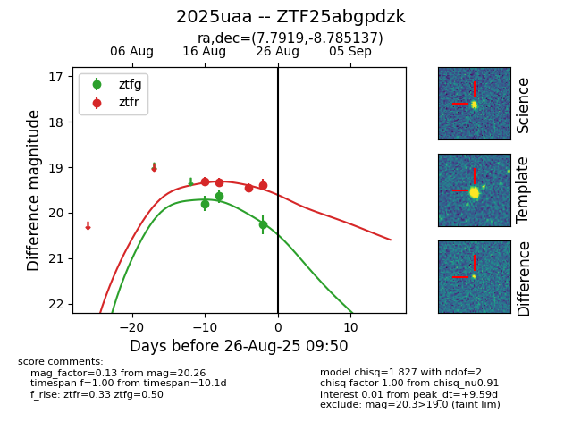

Target 2025uaa at 2025-08-26 09:55, see:
FINK: fink-portal.org/ZTF25abgpdzk
Lasair: lasair-ztf.lsst.ac.uk/objects/ZTF25abgpdzk
ALeRCE: alerce.online/object/ZTF25abgpdzk
TNS: wis-tns.org/object/2025uaa
YSE: ziggy.ucolick.org/yse/transient_detail/2025uaa
alt names
ZTF25abgpdzk (ztf,fink)
2025uaa (tns,yse)
coordinates:
equatorial (ra, dec) = (7.7919,-8.78514)
galactic (l, b) = (107.3456,-71.04093)
photometry
last atlaso=19.31, ztfg=20.26, ztfr=19.39
1 atlaso, 3 ztfg, 4 ztfr detections
